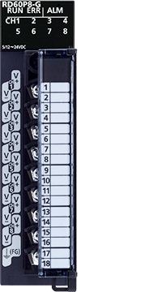
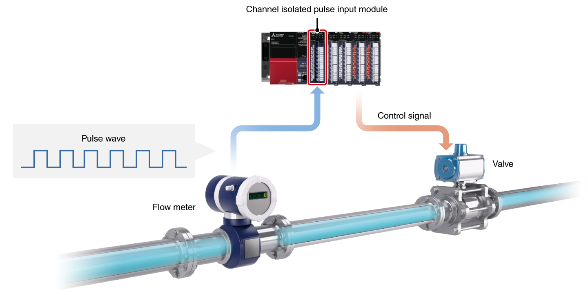

Controllers MELSEC iQ-R Series Product features -High-speed counter, Channel isolated pulse input, Flexible high-speed I/O control-

Channel isolated pulse input module
The channel isolated pulse input module is capable of up to 30k pulse/s for the DC input.

Features<sup>Multiple measurement functions and channel isolation are ideal for process control applications</sup>
- Multiple measurements
- Channel isolation
- One module can measure the number of input pulse data for speed, rotation speed, and instantaneous flow rate and also measure quantity, length, and cumulative flow rate of 8 channels maximum
- Galvanic channel isolation is included which prevents noise interference making it ideal for process control applications

Specifications<sup>Channel isolated pulse input module specifications</sup>
| Item | RD60P8-G |
|---|---|
| Number of channels | 8 |
| Withstand voltage | Between I/O terminals and programmable controller power supply: 500 V AC rms for 1 minute 1780 V AC for 1 minute between channels |
| Isolation resistance | Between I/O terminals and programmable controller power supply: 10 MΩ or higher, at 500 V DC 10 MΩ or higher, at 500 V DC between channels |
| Count input signal | |
| 1-phase input | ● |
| Signal level | 5 V DC/12…24 V DC |
| Counter | |
| Max. counting speed (pulse/s) | 30k |
| Counting range | Sampling pulse number: 16-bit unsigned binary (0…32767) Accumulating count value: 32-bit unsigned binary (0…99999999) Input pulse value: 32-bit unsigned binary (0…2147483647) |
| Count type | Linear counter, ring counter |
| External interface*1 | |
| 18-point screw terminal block | ● |
- *1.For applicable options, please refer to the relevant product manual.